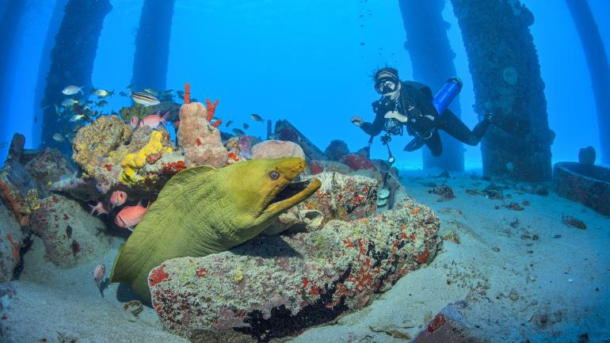

アメリカ領ヴァージン諸島 は50を越える諸島で、ほとんどが無人島。 多くの人が住んでいるのは首都がある セント・トーマス島 、島の75%以上が 国立公園 の セント・ジョン島 、一番大きな島 セント・クロイ島 。 1600年代から デンマーク に統治されていたが、1917年アメリカ合衆国に2500万ドルで購入されて以来、アメリカ領ヴァージン諸島となっている。 セント・トーマス島には、ショッピングの中心地「シャーロット・アマリエ」があり、ナイトライフを楽しむことができます。

亜熱帯。米領ヴァージン諸島では、夏は長く、暑く、蒸し暑く、ほぼ曇り、冬は暖かく、蒸し、乾燥状態、ほぼ晴れ、年間を通じて風が強くです。 1 年を通して、気温は 23°Cから 32°Cに変化しますが、22°C 未満または 34°C を超えることは滅多にありません。

西インド諸島にあるアメリカ合衆国の保護領（自治領）。ヴァージン諸島の西側半分でかつては「デンマーク領西インド諸島」としてデンマークの植民地であった。デンマークが植民地としての関心を失った20世紀初頭にアメリカ合衆国が買収して今に至る。東側はイギリス領ヴァージン諸島である。「島」と呼ばれるのは40程度あるが、ほとんどが無人島である。人が住み、一般の観光客が訪れるような主要な島はセント・トーマス島、セント・クロイ島、セント・ジョン島の3島である。首都はセント・トーマス島のシャーロット・アマリー。

石器時代にまでさかのぼれば、おそらくアラワク族の狩猟採集民シボネイ族がいたと考えられている。カヌーの制作と船舶の操縦技術に長けたアラワク族は、アマゾン川とオリノコ川の流域から移住し、綿、タバコ、トウモロコシ、キャッサバ、グアバを栽培した。いくつかの洞窟壁画や岩石彫刻が島に残されている。カリブ族が侵入するまで、彼らの文化は数百年続いた。 残忍な食人の評判で知られるカリブ族は、平和に暮らすアラワク族の多数の集落を破壊した。1400年代の半ばまでには、アラワク族の人口は数千までに減らされた。
10.54万人。グラフは人口の推移です。
金融業務 ラム酒の蒸留 時計の組み立て 医薬品 観光 情報技術
貿易、観光、その他のサービスが主要産業です。これらはヴァージン諸島の GDP の半分以上を占めています。
島々は毎年何百万人もの観光客を迎えており、そのほとんどはクルーズ船で訪れています。農業部門が小さいため、島々は食料のほとんどを輸入しています。政府と産業はそれぞれ GDP の約 5 分の 1 を占めています。
ウィムの歴史 ヴァージン諸島のことを知ってもらうために、地元の人たちならエステート・ウィム・プランテーション・ハウス博物館（Estate Whim Plantation House Museum）をお勧めするでしょう。ここでは、地元の歴史、遺物、古い写真、セントクロイ島を故郷とした数々の国籍の人が残した芸術品を見ることができます。生バンドによる古代のアフリカ音楽の演奏や、ルイボスティーのサービスもあります。島の砂糖の供給や、人々の大好きな、そして重要な製品であるラム酒を製造していた古い製糖工場のツアーに参加してみましょう。
セントクロイ島でサンゴや海の生き物たちに囲まれてダイビング

島々には、教育を受け、献身的で、安定した労働力が存在します。